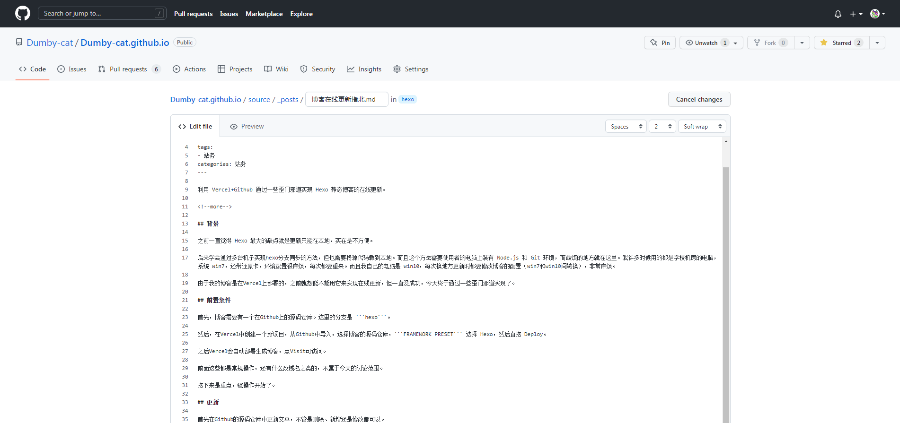
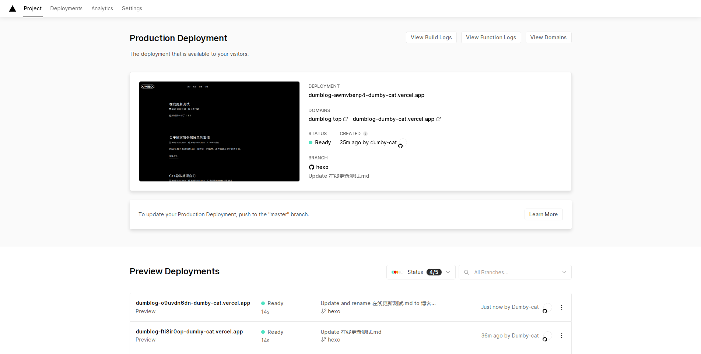
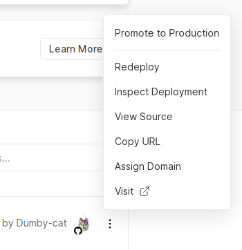

博客在线更新指北
利用 Vercel+Github 通过一些歪门邪道实现 Hexo 静态博客的在线更新。
背景
之前一直觉得 Hexo 最大的缺点就是更新只能在本地，实在是不方便。
后来学会通过多台机子实现hexo分支同步的方法，但也需要将源代码载到本地。而且这个方法需要使用者的电脑上装有 Node.js 和 Git 环境，而最烦的地方就在这里。我许多时候用的都是学校机房的电脑，系统 win7，还带还原卡，环境配置很麻烦，每次都要重来。而且我自己的电脑是 win10，每次换地方更新时都要修改博客的配置（win7和win10间转换），非常麻烦。
由于我的博客是在Vercel上部署的，之前就想能不能用它来实现在线更新，但一直没成功，今天终于通过一些歪门邪道实现了。
前置条件
首先，博客需要有一个在Github上的源码仓库。这里的分支是 hexo。
然后，在Vercel中创建一个新项目，从Github中导入，选择博客的源码仓库，FRAMEWORK PRESET 选择 Other（或者 Hexo，这里建议选Other，因为选Hexo经常会有hexo g命令失效的问题，非常麻烦，other就不会有），然后直接 Deploy。
之后Vercel会自动部署生成博客，点Visit可访问。
前面这些都是常规操作，还有什么改域名之类的，不属于今天的讨论范围。
接下来是重点，骚操作开始了。
更新
首先在Github的源码仓库中更新文章，不管是删除、新增还是修改都可以。

保存后，Vercel 应该会检测到修改然后自动部署一遍。
但是，它自动部署后，我们更新的文章并不会出现在部署出的博客中。
接下来，打开Vercel的这个界面，我们发现底下的Preview Deployments栏中有一个最新的Deployment。

点击那条Deployment最右边的三个点，选择Promote to Production。

再点击 Promote to Production 之后Vercel应该又会自动Deploy一次，这次部署完之后，进入博客你就会发现，文章更新了！！！
于是在线更新就成功实现了。
虽然有点歪门邪道，我也不确定会不会有什么缺点和漏洞，但是我也是刚自己摸出来这个方法，就写篇博客记录下好了。